CS184/284A Spring 2025 Homework 3 Write-Up
Link to webpage:"https://cal-cs184-student.github.io/hw-webpages-swushycupcakes/hw3/index.html"

Overview
In this homework, I implemented a physically-based path tracer from the ground up. Starting with ray generation and primitive intersection, I built up through BVH acceleration, direct lighting (both hemisphere and importance sampling), global illumination via recursive ray tracing, and finally adaptive sampling to efficiently allocate samples where they are most needed. The result is a renderer capable of producing photorealistic images with soft shadows, color bleeding, and realistic light transport. One of the most interesting takeaways was seeing how much visual quality improves with each additional bounce of indirect light, and how importance sampling dramatically reduces noise compared to uniform hemisphere sampling.
Part 1: Ray Generation and Scene Intersection
In this part, I implemented the core components of the rendering pipeline: ray generation from the camera and ray–primitive intersection tests.
For each pixel, rays are generated by sampling within the pixel area and converting those
samples into normalized image plane coordinates. Given pixel coordinates \((x, y)\), I
compute \((u, v)\) by dividing by the image width and height. These coordinates are passed
into the camera's generate_ray function, which constructs a ray originating at
the camera position and pointing through the corresponding point on the image plane in world
space. Once a ray is generated, it is tested for intersections with scene primitives such as
spheres and triangles. The closest intersection along the ray is stored, and its associated
surface normal and material properties are used for shading.
Möller–Trumbore Triangle Intersection
For triangle intersection, I implemented the Möller–Trumbore algorithm, which efficiently computes the intersection between a ray and a triangle using barycentric coordinates. The triangle is defined by vertices \(p_0, p_1, p_2\), and the ray is defined as: \[ r(t) = o + td \] The algorithm solves for \(t\), \(u\), and \(v\) such that: \[ o + td = (1 - u - v)p_0 + up_1 + vp_2 \]
This is done by:
- Computing edge vectors: \( e_1 = p_1 - p_0,\quad e_2 = p_2 - p_0 \)
- Computing the determinant via cross product: \( h = d \times e_2,\quad a = e_1 \cdot h \)
- If \(a\) is near zero, the ray is parallel to the triangle — no intersection.
- Otherwise, solve for barycentric coordinates \(u\) and \(v\), ensuring \(0 \le u \le 1\), \(0 \le v \le 1\), \(u + v \le 1\).
- Compute \(t\). If \(t\) lies within the valid range of the ray, record the intersection.
This method is efficient because it avoids explicitly computing the plane equation and directly determines whether the intersection lies inside the triangle.
Normal Shading Results
To verify correctness, I rendered several .dae scenes using normal shading,
where the color at each point corresponds to the surface normal mapped to RGB space.
Smooth gradients across curved surfaces indicate proper normal interpolation, while sharp
edges on meshes reflect accurate geometric boundaries.
|
|
|
|
|
Part 2: Bounding Volume Hierarchy
To accelerate ray–scene intersection tests, I implemented a Bounding Volume Hierarchy (BVH). The BVH organizes primitives into a tree structure where each node contains a bounding box that encloses a subset of primitives.
The BVH is constructed recursively:
- For a given set of primitives, compute a bounding box enclosing all of them.
- If the number of primitives is below a threshold (leaf size), create a leaf node.
- Otherwise, split into two subsets and recursively build child nodes.
Splitting Heuristic
I use a centroid-based median split: compute centroids of all primitives, select the axis with the largest extent (x, y, or z), sort by centroid along that axis, and split at the median into two equally sized groups. This produces reasonably balanced trees without the overhead of more complex methods like SAH.
Large Scene Renders (BVH required)
|
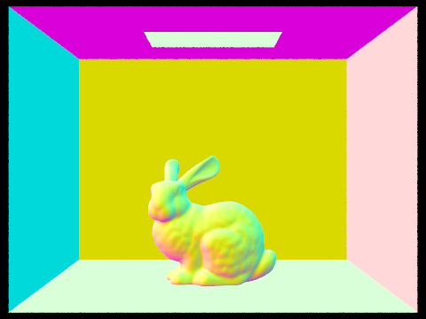 |
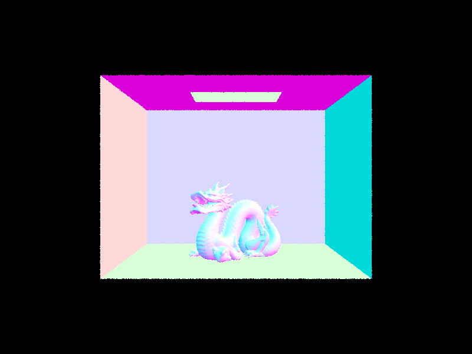 |

|
Performance Analysis
| Scene | Without BVH | With BVH |
|---|---|---|
| CBbunny | 8.375 seconds | [fill] |
| CBdragon | [fill] | [fill] |
Rendering without BVH requires \(O(n)\) intersection tests per ray. With BVH, rays first test against bounding boxes, allowing entire subtrees to be skipped, reducing average complexity to \(O(\log n)\) and enabling practical rendering of scenes with thousands of primitives.
Part 3: Direct Illumination
In this part, I implemented two approaches for estimating direct lighting: uniform hemisphere sampling and importance sampling of light sources.
Uniform Hemisphere Sampling
Incoming directions \(w_i\) are sampled uniformly over the hemisphere in local coordinates, transformed to world space, and used to cast a shadow ray. If the ray hits a light source, the contribution is computed as: \[ L = \frac{f(w_o, w_i) \cdot L_i \cdot \cos\theta}{\text{pdf}} \] The PDF is constant at \(1/2\pi\). This method is simple but inefficient — many samples miss light sources entirely, especially when lights are small.
Importance Sampling of Lights
Rays are directed specifically toward each light source, with a PDF proportional to the light's solid angle. This ensures far fewer samples are wasted, significantly reducing variance and producing cleaner images with the same sample budget.
Comparison: Hemisphere vs. Importance Sampling
|
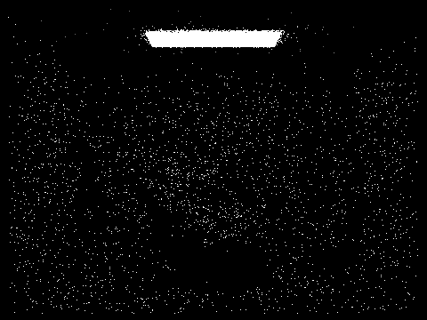 |
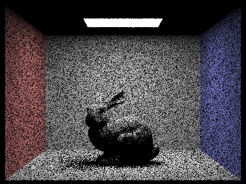 |
Noise vs. Light Sample Count (1 spp, importance sampling)
|
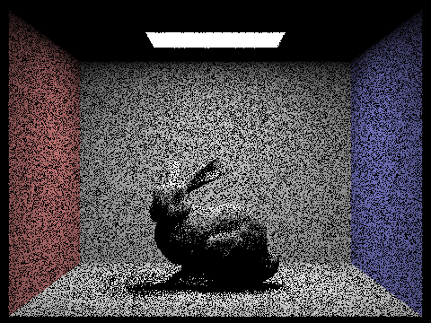 |
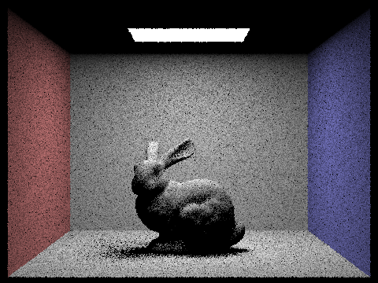 |
|
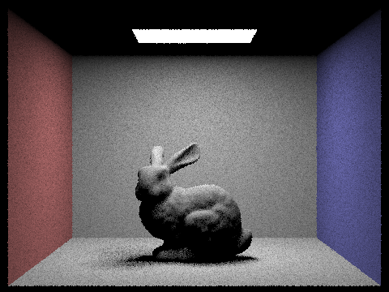 |
|
Hemisphere sampling produces noisier results because most directions miss light sources, causing high-frequency speckling especially in soft shadow regions. With importance sampling, noise decreases steadily as light rays increase from 1 to 64, and soft shadows become progressively smoother.
Part 4: Global Illumination
To implement global illumination, I extended the pipeline to account for indirect lighting
via recursive ray tracing. At each intersection, I compute \(w_o\) in local coordinates,
sample a new direction \(w_i\) via the BSDF, and generate a new ray. If it hits another
surface, I recursively estimate incoming radiance:
\[ L = \frac{f(w_o, w_i) \cdot L_\text{incoming} \cdot \cos\theta}{\text{pdf}} \]
Recursion is limited by max_ray_depth, and origins are offset by
EPS_F to avoid self-intersections.
Direct vs. Indirect vs. Global Illumination
|
|
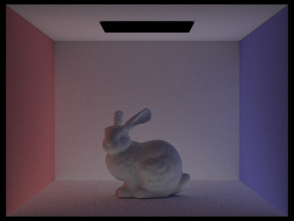 |
|
|
Unaccumulated Bounces (isAccumBounces=false)
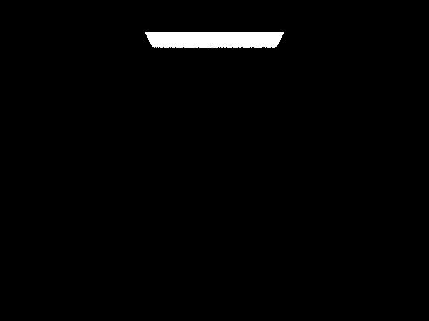 |
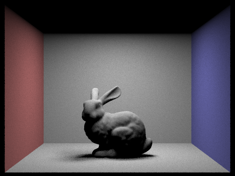 |
|
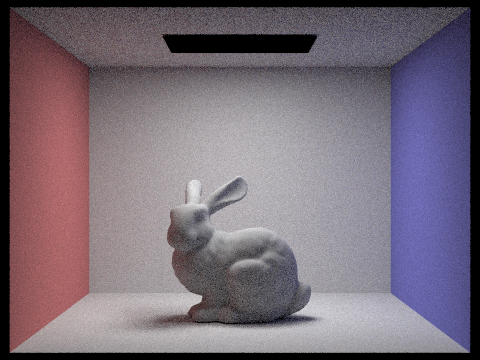 |
The second bounce (m=2) is where indirect lighting first becomes visible, introducing color bleeding from the colored walls. The third bounce (m=3) further softens the scene. Compared to rasterization (direct only), these additional bounces significantly improve realism.
Accumulated Bounces (isAccumBounces=true)
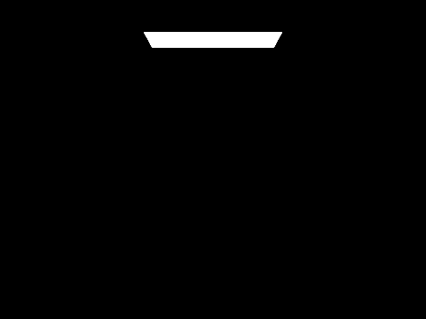 |
||
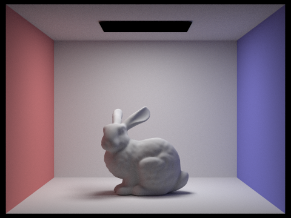 |
Russian Roulette Termination
Instead of tracing rays to a fixed depth, I probabilistically terminate rays after each bounce using a continuation probability, scaling surviving rays to maintain an unbiased estimate. Beyond ~3–4 bounces, additional bounces contribute minimal visual change — the m=100 render is visually similar to lower-depth renders.
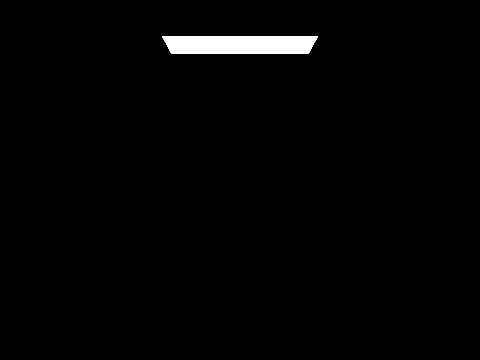 |
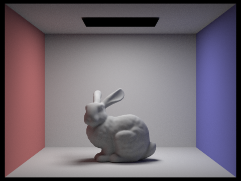 |
|
Sample-Per-Pixel Convergence
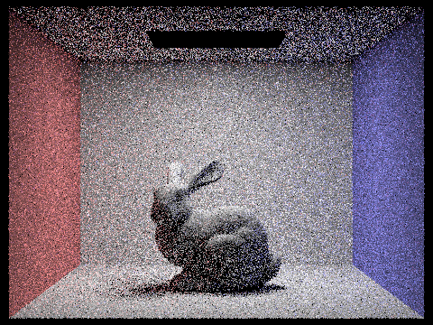 |
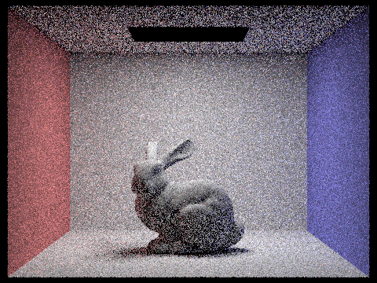 |
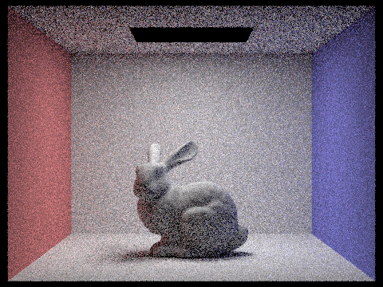 |
At low sample counts the image is highly noisy. As samples increase, noise decreases and the image converges. At 1024 spp the result is clean and visually consistent.
Part 5: Adaptive Sampling
Adaptive sampling improves efficiency by allocating more samples to noisy pixels and fewer to stable regions, rather than using a fixed count everywhere.
For each pixel, I track a running mean and variance: \[ \sigma^2 = \frac{1}{n-1} \left( \sum x_i^2 - \frac{(\sum x_i)^2}{n} \right) \] Every 32 samples, I compute a 95% confidence interval: \[ I = 1.96 \cdot \frac{\sigma}{\sqrt{n}} \] If \( I \leq \text{maxTolerance} \cdot \mu \), the pixel has converged and sampling stops. Otherwise sampling continues up to the maximum count.
|
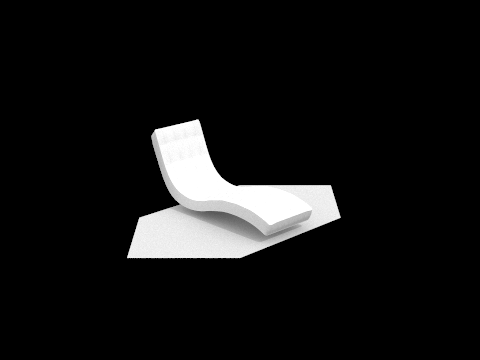 |
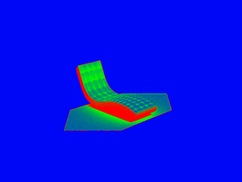 |
|
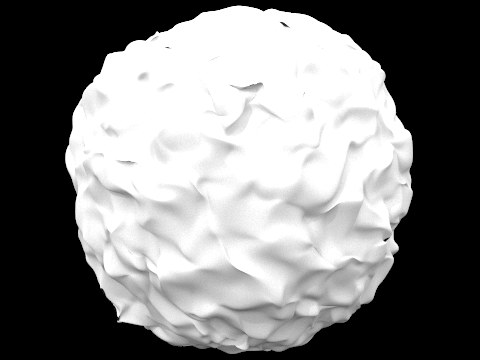 |
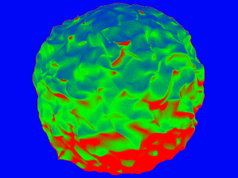 |
The heatmaps show higher sample counts in complex regions (shadow boundaries, indirect lighting areas) and fewer samples on flat, uniformly lit surfaces. The final renders appear smooth and noise-free while avoiding unnecessary computation in low-variance areas.